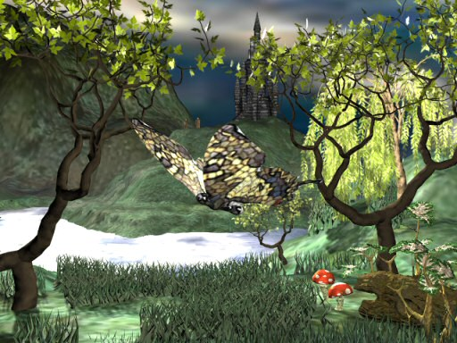

")
Issue 22 - Zamorak Deconstructs

As well as the usual displays of arrogance and sarcasm, topics of interest in this edition of the letters page include demons, and vampires and magic, oh my!
Greetings, loyal subjects!
It seems like an age since last I shared my tactical prowess with you! Well, recently I have been very busy laying various plans around the land - sadly none have yet come to fruition due to the interference of meddlesome Saradominists, but I have high hopes for some of my upcoming schemes!
I don't want to give too much away right now, because only a fool reveals his plans in plain sight of his enemies, but rest assured loyal Zamorakians, soon we shall strike, and the world will forever remember our power!
In the meantime, while we're sat around waiting for things to kick off, why don't we have a little look at what the messenger has brought me this time...
To Zamorok
I have found your secret. I know why you are angered by people taking your wine! It is because the wine is not really wine, but BLOOD! From those have chosen to follow your path. You draw power from this blood, and thusly it is undrinkable by Geilenorians! But, since the power have been draw from it, it is no longer goopy as blood should be. But it is watery, like wine. So, Geilenorians think it MUST be wine. But 'tis not!
...
Now I'm going in circles...
One who follows the circle of Balance,
Petrarock
Herblorists! Don't drink potions recklessly, it can affect your mental health!
Do not exceed stated doses, and always use fresh ingredients!
I am one of your biggest fans.I really like your lesser demons and greater demons.I was wondering if you could make a big portrait of a lesser demon and greater demon destroying things.
Your's and your demon's fan Millpendant.
It's always good to hear from a fan of my work - most people are usually to busy running away going 'Eeek! A demon!' to really notice their own special kind of beauty.
I had my most talented lesser quickly knock up the following just for you - I hope you like it, it cost me a whole bottle of Draynor Malt.

Oh Great Zamorak
I have heard a disturbing rumour that a large amount of miniture space squirrels are soon to come and invade runescape, destroying all building that it holds, and biting the bankers until they release all our valubles to their possession. I have spent many years building my massive bead collection, and I would dearly hate to see it taken away by some evil space squirrels, focused on the task of wrong doing! Is this true? Or is it just another story the mighty magical mage "Andrew" tells the children to frighten them?
P.S. whats your favourite brand of chips?
Sadly yet another Guthixian takes their experimentation with herblore too far...
Irit leaves are very potent, and should always be taken in diluted quantities with an appropriate reagent.
Just say no, followers. Just say no. A warrior needs a clear mind going into combat, they don't need to be drunk upon super strength potions...
Dear Zamorak my beloved god,
I know of your unkind (yet so dang awesome) ways of treating people in the wilderness. but, i have one question to you: why these evil ways? not that i don't adore them but why evil instead of good like guthix? is it just more fun to torture people by hanging them over your banditd toasting fire or do you do it for the large amount of gold you make? (i mean you kill people everyday you must get what 50k a day least?)
your trusty kill aid,
madmonkdude
Pah, don't colour me with your own small minded morality.
I am 'evil' because that's what the weak always call the strong who subdue them.
It's not just fun to crush my enemies with my power, and then torture them as an example for others who would dare resist me; I am teaching you all a valuable lesson about how the way the world works here!
You should all say 'thank you Zamorak' as I crush your bones and burn down your houses! And then come back begging for more of my wonderful lessons!
Muhahahaha
Who do you think you are? Sardomans have lived in peace and prosparity for ages.
Who are you to lead others on that you are the 'Higher Power?' Your not a God. Your
a curse. Encouraging others to believe in your cult is... just preposterous. Why would you killinnocent farm hands to fulfill your sick passion?
I curse you!
We Sardomans rejoice the day you WILL be over-thrown!
Darkspeeds
Hmmmm? And how are those Saradominists going to overthrow me? Sing at me? Clap their hands and throw their money at me? Maybe hold some kind of sale with cakes and crafts to raise money to sign a petition to ask me to please play nice?
I've been on a farm. I know what those farmhands get up to when no-ones around. They don't like strangers on their lands, those farm folk, do they? Like to stick to their own, hmmm?
If you ask me they're better off dead, all of them.
Who eats potatos and cabbage when you can eat freshly killed meat still raw with blood? A sissy, that's who!
was it you who burnt the hole in the office wall?
if so why did you do it?
It was in my way. Plus it was kind of fun.
Actually, that's a pretty good answer for most of my actions.
I might burn some more walls in the future just to remind myself of the experience. Anything that spooks the Mage Andrew is always a good source of entertainment.
Dear almighty and powerful Zamorak,
Where did you come from? What race of species are you? you look cool and i wana look like that. I wonder if they make halloween costumes like you these days.
From your soon-to-be friend,
KevQ
P.S. May I call you Zammy? for short other than Zamorak? Chicks dig it~
Hmmm... your disrespect and impertinence almost requires me to kill you... but I will let it pass this time, as you might not know about me yet.
The name is Zamorak.
I am not your friend, and my name should be spoken with the fear and reverence it deserves, not shortened so that it sounds like the name of some beloved pet.
To answer your other question, I am originally of the noble race of the Mahjarrat, devourers of Freneskae.
You don't have much of a chance of looking like us, and your attitude suggests you don't have much chance of acting like us either.
Toughen up, kid - if you want to impress me, you need to do it in the glory of the battlefield...
O' evil one...
I am one of your greatest enemies... you just don't know it yet!
Soon...very soon...you will hear the cries of YOUR own followers being murdered like cows at a slaughterhouse. Although I am a pker... I kill in the name of Saradomin...(though he might not agree). You say you can smite mortals with your bare fists??? I beg to differ!!! I dare your unroyal lowness to come at me with all you've got!!!! Also...I've got some questions to ask: :D
1) Is Guthix really a floating metal ball?? (if so, ive lost respect for him)
2) Why aren't there any Godesses???
3) Were you born so evil?? (Babies are pure)
4) Is there going to be a weapon that surpasses Dragon Battle Axe?
5) Do you have any friends? (if not, i wonder why......)
6) Do you have a special weapon intended to be used against me??? (when i challenge you)
Though i regret to say, thanks for your time (see?? i am polite to my enemies)
-- Omega Mob (brother of Alpha Mob)
Jason Ramos
Seems like some of you Saradominists are getting pretty cocky recently... Although I have to hand it to you, you certainly show more bravado than the usual sissy Saradominists do... and hanging out in the Wilderness? I might make a convert of you yet...
I'll answer your questions, but if I were you I would be wary about entering the wilderness in the future.
1) At the moment he's a big floating metal skull, but I've also seen him as a small multicoloured butterfly and as a large rock type thingy. He's a weird one...

2) Hey, there are, I just don't take much interest in them as they seem to be immune to my 'charms'.
I guess if it will make you happy I'll go hit on them again, maybe bother finding out their names or something this time...
3) Well, that's one way you could look at it. The other is that at my birth the doctor lost a finger and the midwife screamed in her every sleepless night until the end of her life...
4) I am always interested in weaponry, and as much fun as a long, drawn out, and bloody battle might be, there is always a need for a decisive and sudden display of power. I'll have some of my Chaos Dwarfs look into experimenting with some stuff, and get back to you on that.
5) Friends are a weakness, all you can rely on is yourself. I share my combat experience with nobody! Followers are better than friends anyway, and minions are the best of all!
6) Ha! If you ever had the combat prowess necessary to attack me, I would still need nothing more than my own two hands to crush you like the Saradominist bug you are. I probably don't even need both hands to do it. Heck, I could probably beat you with a well aimed sneeze.
RuneScape was the greatest thing to ever happen to me, hours upon hours of the most simple, yet challenging game, it was so fun untill you ruinind it with your stupid complex "RuneScape II" it is so dumb. The wilderness in RS II is so trashy...multiplayer combat...the dumbest idea ever. Ranging in a battle what the heck? No magic in a battle? Teams are forever ruined. So are pures, prayerbeast(which by the way kick butt!) Do you know how many people will quit because of your dumb RS II. No matter how much you stress it what you call "RuneScape Classic" is the only real Runescape. Drunkin Saradomin, drunkin Guthix, drunkin Zamarok, drunken Andrews...
P.S.- my Rs Names are Ix 3 h1t xi, pkin souljah. prayerful pk, and lords pker...bann em all i dont care...hound me i could care less...im starting a pettition! YOU RUINED IT!!!!!!!
I see not why a warrior would object to the assistance of their brethren in battle... assuming they have any friends who would stand by them in a fight of course.
As to your bizarre claims that rangers and mages cannot use their skills in the midst of battle, it is true that there are some lazy and greedy Saradominist mages who only superheat or high alch items, and teleport around the lands at will, but most mages are worthy of respect, and fearsome in combat to the unprepared.
As for your other wild boasts, it has always been my experience that only the puny and the sissy blame their failings as a warrior on anything other than their own incompetence!
It certainly seems as though one of us is 'drunkin' - I suggest you resist training herblore for a little while...
Dear the evilest evilness,
How do people get the map of the wilderness?
In the pass, you told us the official map makers all died
in the wilderness. But now, open the the 'how to play'
index...... lo and behold ! The map of wild reviles.
From Spider Lok
Sadly the pathetic council seem to have made a more concerted effort to have mapped my kingdom recently, and sent their cartographers under escort with a number of Paladins and Heroes, barracked from Ardougne.
I hold the PKers who failed to kill them in their mission in contempt.
Come on guys! You know the drill by now! Anything living that enters my kingdom of the wilderness ends up as a heap of bones and a pile of loot! You so-called 'PKers' are showing me up here!
Why is the armor to represent you evilness, which
should obviously be the greatest ever, is one of the
weaker armors in the game. I mean, it looks awesome,
but it is not nearly as good as the next best,
Mithril, and not NEARLY as good as Addy. I was just
wondering your thoughts on this. (I ALWAYS use black)
Your loyal servant
Chosen Child
The armour that bears my name is as strong as Rune, and trimmed with the stains of my enemies blood.
Black armour is weak because its designed to be stylish not functional.
I approve of the wearing of both of them, because I value a warrior choosing to wear lesser armour in favour of their own stylish appearance just as highly as I value a warrior picking the best armour they have available to them.
To the great god of chaos and evil:
Why do you answer these pitifil humans? All they ask is meaningless questions. So why do you answer them if you are the god of chaos and evil?
why dont you torment them by not answering their questions and spending more time in the wilderness spreading evil?
your most trusted follower:
El Jamo-2
I frequently lie when answering questions. Misinformation is a powerful tool, just as independent thought in my subjects should be rewarded.
Think what I am really saying as I say it, and you will find yourself a stronger warrior for it.
I will of course crush any rebellion against my word in my followers ruthlessly. Independence is all well and good up to a point, but cross me or defy me and be prepared to suffer the consequences.
dear evil one
wat is youre guide to be a evil mage
youre great follower,
pyropk128
Evil mage huh? Well, I have a couple of tips you might find useful...
1) Learn Magic
2) Kill stuff
Hows about that, then?
HI U DEFUNGLED PIECE OF MUCK
I HATE UUUUUU! MY BUSINESS HAS BEEN RUINED! BECOS U MOVED THE SAPPHIRE HOUSE AND THE SPIDERS THERE NEARLY KILLED ME AND NOW I CANT MAKE MONEY FROM CRAFTING AND IIII HAAAATE UUUUUUUU ANYWAY IVE SWITCHED RELIGION NOW AND IM GONNA KILL AS MANY OF UR FOLLOWERS AS POSIBLE!!!! THEN IM GONNA GET A NEW LAW INTRODUCED THAT SEZ THE OTHER GODS CAN USE THEIR POWERS ON U AND U WILL BE CAST INTO OBLIVION!!! AND I STILL HATE U!
UR HATER , WYTEKNYTE
PS U CAN TELL IM WIV SARADONIM (spelt correctly) COS OF MY NAME!!!!!!
PPS I STILL HATE U!!!!
After some recent setbacks in my schemes to crush those snooty followers of Saradomin in Misthalin once and for all, I was feeling a little blue.
Hey, don't take it as a sign of weakness, we all have 'down' days every once in a while, it's perfectly natural. You'll be glad to hear that your letter cheered me up no end! Thanks for the compliments!
And a reminder: the key you are looking for is usually between tab and shift...
PS. - Why don't you ask 'Saradonim' what he's going to do about it?
Your Evilness,
I have become very curious of late. You have many thousands of followers over Runescape. After your goals of death and destruction have been completed, ad all your enimies have been obliterated to less than ashes, what rewards will your followers receive?
Theokestral
Why, they will get to compete against each other for the title of mightiest warrior amongst themselves of course!
The winner of that will then have the unique opportunity to challenge me themself personally, and of course then have the honour of dying at my hands!
What more can a follower of mine ask for?
O evil one,
i have two things to say, my lord.
1. in the palace in varrok, they are keeping one of your monks prisoner, how dare they keep a servant of darkness enslaved, they have no right!
2. I have been working on my magic level, hoping to get to 80, so that i can cast flames of zamorak, but so far i have only been able to get to level 31, if it is not to much to ask, could you give me any tips on raising my magic?
your humble servant,
magnamater
1) He failed in his tasks, and was left alive to be taken captive by my enemies. He deserves the punishment he has received.
2) Tips on raising magic eh? Well, I have a couple...
a) learn magic
b) kill st... you know, I have the strangest feeling of déja vu...
Unholy Zamorak,
My name is forgesfire, if you can't tell from my name, I a smith, but in my spare time I like to practice the magical arts. One day I was looking over the spells I can't wait to be able to unleash upon some unsuspecting newb in your beautiful kingdom of the wilderness, and I happened to notice that I could unleash your flames, the only problem is, I need the staff to do it, and I have been looking all over for this staff but I cannot seem to locate it, so I am asking that you supply me with a location, but please note, I am not asking you to give it to me, I am asking for you help to find it, i would prefer to work for the honor then to have it handed to me, and once I find it, I would gladly slay many Guthixians and even more Saradominists to honor even your thought of helping me.
Like most of my favourite activities, you will find the answer you seek in the deep wilderness...
North of the lava maze and Red Dragon isle you will find the fabled Mage Arena, run by Kolodion, perhaps my favourite Mage.
Should he find your skills to be powerful enough, he will permit you to talk to him, and should he find you worthy as a spellcaster he will then teach you this powerful magic that makes warriors tremble in fear. Plus you can get a snazzy looking cape to go with your new staff!
Oh great and almighty zamorak I have but one question for you why isn't there any necromancy in the game being to summon ghosts, zombies, and skeletons whould make the game much more interesting

Trying to steal my tricks are we? You're not worthy enough for that kind of power, and I'm not going to share it with any of you.
Maybe in the future when I can trust you not to mess things up and provide evidence of my breach of the treaty, but right now? No way.
What's wrong with you anyway? Can't you deal with your own enemies yourself, or do you have to delegate?
Oh dear dark lord,
I've one more sensable question to ask, add this question to my last questions if you will or if you choose not to it is fine...I have searched the world of RuneScape far and wide, and being a lover of death and decay and senseless murder that I am...I've yet to find any Vampires(aside from that weakling Draynor)...I think Vampires would be a great addition to RuneScape...And they would be able to spread your evil desires across the land, saving you much more work...I figured you of all 3 of the gods would be able to do this.....
Your faithful and deluded and demented and alot of other things that start with the prefix "de" servant,
Vortosis
Well, the vampires have mostly been contained in Morytania unfortunately, but don't worry, I am still doing my best to break the barrier that keeps them out so that they might spread their fear across the lands once more!
Why, I was discussing strategems with Lord Drakan only last night, and let me tell you; he has some really good (and bloodthirsty - literally!) ideas he was happy to share with me on this very subject!
Dear Zamorak,
Could you stop annoying Reldo long enough for him to update the bestiary? A lot of the levels are from runescape classic.
Snake712
Well... possibly.
You are asking me to both give up the fun of torturing the worlds' biggest bookworm, AND let people have an accurate idea of their strength of the creatures I send to smite them...?
I'll have to consider it. I think he has let Saradomin have far too much glory in his pathetic little library so far though, he is going to have to rethink his editorial policies to reflect my power more if he wants to survive until winter.
Well, a surprisingly helpful edition of the letters from me this time. Ah, I don't really mind, I'm not so busy at the moment that I can't share some insights with my followers while I await my inevitable return to glory throughout the lands.
I see a number of new recruits to my armies have recently entered this land, so I will issue this small reminder that those who think they are battle worthy enough, and offer the due respect, can request a small amount of my cunning by writing to my address given below - but if you have problems with your account or technical issues don't bother me with them!
There are a crack team of gnomes that call themselves Customer Support whose sole joy in life is talking to players, and who are just dying to help you with your password support and technical issues, so speak to them, and make a gnome happy!
It's not like much else in life does...
Until next time we meet brave warriors, I leave you with my familiar motto;
Strength through chaos-
Zamorak
DISCLAIMER: The views of Zamorak do not reflect the views of Jagex Ltd or it's employees. We'd ban him, but he's a god.

More articles in
God letters
|
|